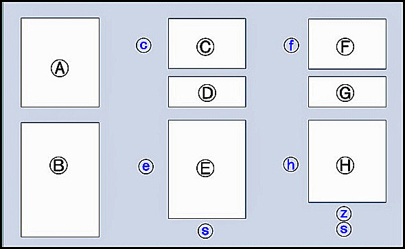

La schermata Administer Person Name Styles offre all'utente l'accesso a una funzionalità molto potente di HRE: la capacità di definire e quindi implementare una gamma di stili di nome e stili di posizione per soddisfare una gamma di tipi e usi personali, culturali e geografici.
Il layout della schermata per l'amministrazione degli stili dei nomi (sia per i nomi delle persone che per le posizioni) è mostrato nel diagramma seguente.
La sezione [A] contiene informazioni di base sul layout dello schermo e su come usarlo.
La sezione [B] contiene un elenco di tutti gli elementi attualmente definiti per l'uso in uno stile nome, sia per una persona che per una posizione, a seconda della schermata visualizzata. Poiché il formato e la funzione di entrambi i tipi di schermo sono gli stessi, nella descrizione seguente utilizzeremo i nomi delle persone, per semplicità.
La sezione [C] contiene un elenco dei nomi di tutti gli Stili attualmente definiti del tipo scelto (Persona o Luogo) e quando si apre la schermata, il primo elemento nell'elenco è preselezionato. Una descrizione più lunga dello stile del nome selezionato viene visualizzata in Sezione [D] e può essere modificato.
La sezione [E] contiene un elenco degli elementi esistenti nello Stile Nome selezionato in Sezione [C].
Bottoni per Copia, Elimina e Rinominare degli stili di nome nella sezione [C] esiste alla sua immediata sinistra nell'area (c). Alcuni di questi pulsanti possono essere impostati come inattivi, a seconda del tipo di Stile nome selezionato - vedere la tabella sottostante. La zona (c) contiene anche una casella di controllo "Predefinito" che indica quale stile nome è lo stile predefinito (deve esserci uno e un solo stile nome predefinito). Questa casella di controllo può essere selezionata per modificare lo stile predefinito.
Pulsanti per la manipolazione degli elementi del nome in Section [E] esistono in zona (e). Questi consentono elementi nell'elenco in Sezione [E] da riordinare, togliere dall'elenco, rinominare, e per ulteriori elementi contenuti nella Sezione [B] da aggiungere all'elenco della Sez [E]. Inoltre, l'utente può aggiungere nuovi elementi all'elenco in Sezione [B] da utilizzare negli stili di nome personali. Alcuni di questi pulsanti potrebbero anche essere inattivi a seconda del tipo di Stile nome che si sta modificando.
Il pulsante 'Salva' nell'area (s) sotto la sezione [E]) diventerà attivo se le modifiche allo stile del nome richiedono il salvataggio. Modifiche apportate alla Sez [C] vengono salvati automaticamente e non attivano il pulsante "Salva".
La terza colonna dello schermo, Sezioni [F], [G] e [H], controllare le modifiche agli stili di output associati a qualsiasi stile di nome selezionato nella sezione [C]. Pulsanti nelle aree (f) e (h) funzionano in modo simile, ma più ristretto, ai pulsanti nelle aree (c) e (e). La zona (f) visualizza anche il tipo di stile di output: per report o visualizzazione (sullo schermo). Il tipo può essere modificato, con la restrizione che uno stile Nome persona deve sempre avere un minimo di 2 tipi "Visualizza" (o uno per Località).
Il pulsante 'Aggiungi/Rimuovi Virgola' (z) sotto la sezione [H] controls whether or not the element selected in [H] has a comma following the element when that Output Style is used.
Il pulsante 'Salva' nell'area (s) sotto la sezione [H] diventerà attivo se le modifiche allo stile del nome richiedono il salvataggio. Modifiche apportate alla Sez. Modifiche apportate alla Sez [F] vengono salvati automaticamente e non attivano il pulsante "Salva".
Se il pulsante 'Chiudi' nell'area (s) sotto la sezione [H] viene cliccato quando ci sono modifiche non salvate, ti verrà chiesto di salvare queste modifiche o di chiudere la schermata senza salvare.
Regole che controllano la manipolazione degli stili dei nomi
NOTA IMPORTANTE: quando si copia uno stile di nome, vengono copiati anche tutti gli stili di output associati. Allo stesso modo, se uno stile nome viene eliminato, vengono eliminati anche tutti gli stili di output associati.
Se gli stili nome sono stati importati in HRE da TMG, esistono restrizioni specifiche sugli stili TMG, come mostrato nella tabella seguente. Poiché gli stili di nome HRE sono molto più sofisticati degli stili di nome TMG, gli utenti sono incoraggiati a convertirsi all'uso degli stili di nome HRE.
Denominare l'origine dello stile |
Può essere copiato? |
Può essere aggiornato? |
Può essere cancellato? |
Può essere rinominato? |
Sistema HRE fornito |
Sì |
Sì |
No |
No |
Utente HRE creato |
Sì |
Sì |
Sì (se non è l'attuale DEFAULT) |
Sì |
Stili del sistema TMG importati |
No |
No |
Sì (se non utilizzato) |
No |
Stili creati dall'utente TMG importati |
No |
Sì |
Sì (se non è l'attuale DEFAULT) |
Sì |
Conversione degli stili di nome TMG in HRE
See Come convertire uno stile di nome TMG in HRE